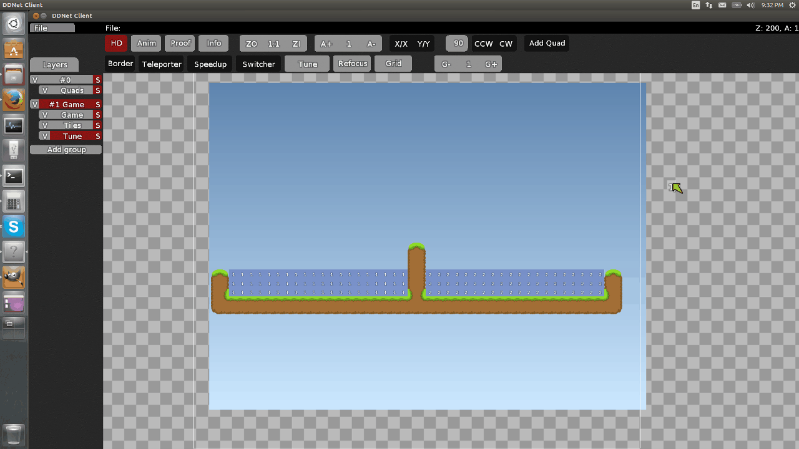

Load up client, open editor and right click Game Group

You will see that there is a new kind of layer that has been added, the Tune layer. Create a new one.
By clicking the Tune button at the top of screen , you will be able to select different Zone numbers.

To put the zone wherever you want, press space and select the light blue square, and treat it as if it were a normal tile. The player will be in the specific zone as long as it touches the respective tile.
Now that you have put your zones, it should look like this:
Now that you have specified the different zones, you have to attribute special physics for each of them. You will need to create a new file in the folder data/maps, ight where your DDNet-Server binary is, called "(yourmapname).cfg". If the .cfg file isn't named the same as the map or if it isnt in your map folder, it wont work.

Open up the file , and try the following. Zone 0 is the default zone, and zone 1 and 2 are the zones that I have put. There are 3 types of commands for zones:
tune_zone_enter "zone num." "text on enter" tune_zone_leave "zone num." "text when leaving" tune_zone "zone num." "tune setting" "value"
It is possible to change more than one setting by zones, for example gravity and ground friction , like shown in the picture above. If you want to find all the settings you can change, look them up in the official list.
There you go!